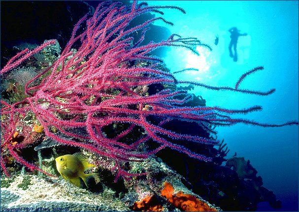
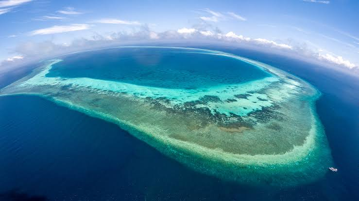

Biodiversity Exploration
- Tubbataha Reefs Natural Park is a globally recognized marine sanctuary, teeming with extraordinary biodiversity.
- It is home to over 600 species of fish, 350 species of coral, 11 species of sharks, 13 species of dolphins and whales, and 2 species of sea turtles, including the endangered hawksbill and green turtles.
- This UNESCO World Heritage Site is celebrated as one of the richest and most pristine marine ecosystems in the world, serving as a vital habitat for countless marine species and a critical breeding ground for many.
Marine Sanctuary

- Accessible exclusively by liveaboard boats, Tubbataha Reefs Natural Park welcomes visitors during its diving season, which runs from mid-March to mid-June.
- This period is considered the optimal time for diving due to calm seas, warm weather, and exceptional underwater visibility, often exceeding 30 meters.
- These ideal conditions offer divers an unparalleled opportunity to explore the park's thriving coral reefs, vibrant marine life, and breathtaking underwater landscapes.
Remote Location

- The Tubbataha Reefs Natural Park is a strictly protected UNESCO World Heritage Site within the Coral Triangle, known as the global center of marine biodiversity.
- The park emphasizes sustainable tourism practices to safeguard its delicate ecosystems.
- Visitors are required to obtain permits well in advance and must adhere to strict park regulations, which include no fishing, no littering, and no touching or collecting marine life. These rules are in place to ensure minimal human impact and the preservation of this pristine marine environment for future generations.
Marine Conservarion